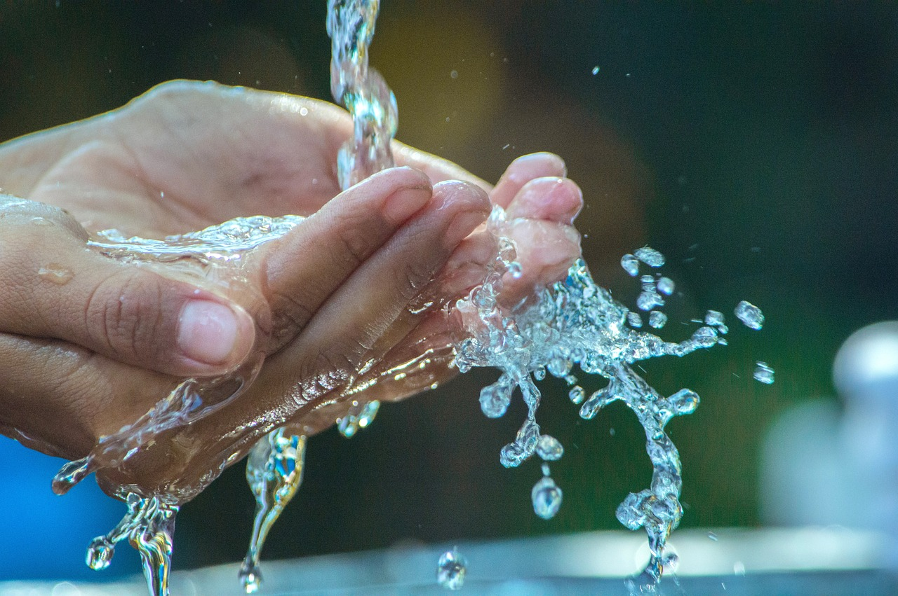

Metas Principais: ODS 6 – Água potável e saneamento
- Até 2030, alcançar o acesso universal e equitativo à água potável e segura para todos.
- Até 2030, alcançar o acesso a saneamento e higiene adequados e equitativos para todos e acabar com a defecação ao ar livre.
- Melhorar a qualidade da água, reduzindo a poluição, eliminando despejo e minimizando a liberação de produtos químicos e materiais perigosos.
- Aumentar o uso eficiente dos recursos hídricos em todos os setores e garantir a retirada sustentável e o abastecimento de água doce.
- Implementar a gestão integrada dos recursos hídricos em todos os níveis.